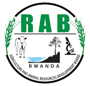

Name: Rwema K. Eulade
Background: Software Engineer from the University of Rwanda, specializing in Computer Engineering.
Experience: Developer of e-LinkAcre, bridging the gap between farmers, buyers, and government through technology.
Vision: To connect agricultural stakeholders with clarity, fairness, and innovation.
We built e-LinkAcre to solve the gap between farmers, buyers, and government institutions. Our goal is to create a transparent, data driven ecosystem where every participant benefits from fair trade, accurate information, and sustainable growth.
Farmers Connected
Transparency
Buyers Connected
Built partnerships with RAB, NAEB, and private investors, connecting hundreds of farmers and buyers.
To expand across all districts of Rwanda and integrate with regional agricultural boards.
Connect farmers and buyers through real-time pricing and transparent transactions.
Enable policy transparency and fair market regulation through data-driven insights.
Order and monitor agricultural equipment deliveries with ease.
Ensure secure payments and verify crop yields for accurate reporting.
Empower farmers with skill development and community programs.

Rwanda Agriculture Board (RAB)

National Agricultural Export Development Board (NAEB)

Ministry Of Agriculture

Rwanda Food and Drugs Authority (FDA Rwanda)

National Agricultural Export Development Board (NAEB)
Rwanda Development Board (RDB)
We value your feedback. Please share your ideas or suggestions below: